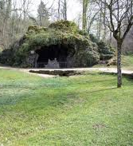
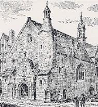
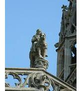
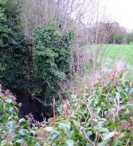
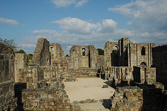
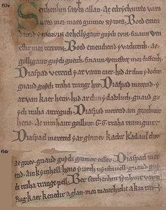
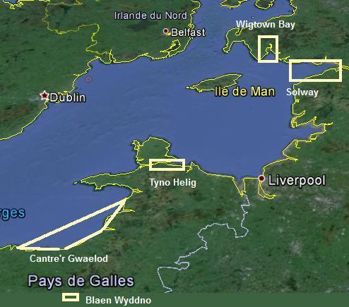

Submersion de la ville d'Is
The Submersion of Is
Dialecte de Cornouaille
|
- précédée de la traduction publiée en 1843 par Pitre-Chevalier dans la "Revue de l'Armorique" Dans l'édition de 1846, La Villemarqué est plus précis: "Un paysan de la paroisse de Trégunc (entre Concarneau et Pont-Aven), appelé Thomas Penvenn , m'a chanté le premier les fragments qu'on va lire. Selon Luzel et Joseph Loth, cités (P. 389 de son "La Villemarqué") par Francis Gourvil qui se range à leur avis, ce chant mythologique ferait partie de la catégorie des chants inventés . |
- but the French translation appeared in "Revue de l'Armorique" in an article by Pitre-Chevalier In the 1846 edition, La Villemarqué is more precise: "A peasant from the parish Trégunc [14 km west of Pont-Aven], named Thomas Penvenn was the first who sang to me the fragments below". According to Luzel and Joseph Loth, quoted by Francis Gourvil (p. 389 of his "La Villemarqué"), this mythological song was " invented " by its alleged collector. |
Ton 1 (do majeur)
Ton 2 (fond sonore de la présente page)
(Arrts: Christian Souchon)
| Français | *** | English |
|---|---|---|
|
1. Entends-tu bien, entends-tu, dis Ce que l'homme de Dieu prédit Au roi Gralon, au vieux roi d'Is? 2.- Sachez résister au désir! Ne vous livrez point aux plaisirs! Car vous pourriez bien en pâtir! 3. Qui mord dans la chair des poissons, Les poissons le dévoreront, Goulûment, s'il est un glouton. 4. Qui pour boire mêle le vin, Boira l'eau des séjours marins Qui ne le sait, le saura bien! - II 5. Le roi Gralon ainsi parlait: - Joyeux dîneurs, il me faudrait Aller un peu me reposer. 6. - Demain matin: il n'est pas tard! Demeurez avec nous ce soir: Mais selon votre bon vouloir! 7. Ce qu'entendant, le bel amant De sa fille dit doucement - La clé, Dahut, c'est le moment! 8. - La clé, je vais la dérober. Le puits sera déverrouillé: Il sera fait selon ton gré! III 9. Or, quiconque eût vu le vieux roi Endormi, serait, croyez-moi, Plein de respect, demeuré coi 10. En voyant son pallium pesant, L'auréole de cheveux blancs, La clé d'or à son cou pendant. 11. Mais, en se tenant aux aguets, Il eut, sur la pointe des pieds, Vu la fille blonde approcher, 12. Et venir tout près de son père, Et, s'agenouillant sur la terre, De ses chaîne et clé le défaire. IV 13. Il dort encor, le vieux seigneur Quand on entend cette clameur: - Le puits relâche son trop-plein ! 14. - Seigneur, il faut que tu te lèves! A cheval et fuies vers la grève, La mer déferle hors du bassin! - 15. - Maudite soit la fille blanche Qui, hier soir, a tiré le clenche Du puits, de la mer dernier frein! V 16. - O Forestier, réponds-moi donc: Gralon sur son fier étalon Est-il passé par ce vallon? 17. - Je n'ai point vu son cheval noir Mais entendu, tard dans le soir, Le bruit du galop, sans le voir. 18. - As-tu vu, pêcheur, la sirène Quand ses blonds cheveux elle peigne Au grand soleil, au bord de l'eau? 19. - Oui, j'ai vu la fille de l'onde Qui chantait de sa voix profonde, Un chant plaintif comme les flots. |
18. - Gwel't a reas 'r vorverc'h, pesketour, O kribañ he blev melen-aour, Dre an heol splann, e ribl an dour? 19. - Gwelout a ris ar vorverc'h wenn ; M'he c'hlevas o kanañ zoken: Klemmvanus-tonn he c'hanaouenn. |
1. O will you tell me, if you please, What the holy man of God pleads To Gralon, the king of Ker Is? 2.- Don't indulge in foolish loving! Don't indulge in foolish living! After joy pain and misgiving! 3. Whoever flesh of fish will dish Shall perish, bitten by the fish, For his sins punished, as I wish. 4. Whoever drinks and mixes wine, Shall be drowned and drink naught but brine. Learn it in time or you shall whine! II 5. The King Gralon made a request, Saying: - With your leave, merry guests, I would like to withdraw and rest. 6. - You should rest tomorrow morning; And stay here with us this evening: But we'll comply with your ruling! 7. But the lover who could that hear Whispered in the King's daughter's ear: - What about the key, Dahud dear? 8. - The key, it shall be distracted. The sea well shall be unlocked. The play you scheme be enacted! III 9. Whoever beholds the old king, Still seated on his throne, sleeping, Cannot help wondering at him, 10. Wondering at his soft wide coat, His snow hairs that around him float, The gold key that hangs on his throat. 11. Whoever had looked out with care Had seen the girl with the fair hair Sneak out bare-footed to his lair. 12. Her way to her father she feels, Most carefully down she kneels And the chain with the key she steals. IV 13. The old King was still sleeping sound When a scream was heard all around: - The well is on! The town is drowned! 14. - Lord King! Get up without delay! Mount your horse, ride from here away! The sea is invading the bay! - 15. Cursed for ever be the white lass That unlocked after the repast The well the main should not surpass! V 16. - Forester, forester, tell me, Did you Gralon's wild stallion see, Hurrying away from the sea? 17. - I did not see his horse running But I heard it in the evening, As swift as a flash of lightning. 18. - Did you see, fisher, the mermaid, Combing her gold hair in the shade, When the sun shines bright on the shore? 19. - I saw the white lass of the sea I heard her song that seemed to be As sorrowful as the waves' roar. |
Cliquer ici pour lire les textes bretons.
For Breton texts, click here.

I. Légende et histoire
|
Résumé
Aux premiers temps de l'ère chrétienne aurait existé en Armorique une ville nommée Is (ou Ys), où régnait le roi Gralon dont Saint Guénolé était le conseiller. La Villemarqué expose dans son "argument" (version de 1867) que la ville d'Is "était défendue contre les invasions de la mer par un puits ou bassin immense destiné à recevoir l'excédent des eaux à l'époque des grandes marées. Ce puits avait une porte secrète dont le roi seul gardait la clef, et qu'il ouvrait et fermait. quand cela était nécessaire Or, une nuit, ... Dahut, sa fille, voulant couronner dignement les folies d'un banquet donné à un amant, déroba à son père la clé fatale, courut ouvrir l'écluse et submergea la ville. Saint Guénolé passe pour avoir prédit ce châtiment. " Il ajoute dans les "Notes": "Et Dieu punit la coupable en la noyant et en la changeant en sirène". Mythe universel ou mythe celtique? La légende de la ville engloutie dans la mer est particulièrement bien représentée en Bretagne: Herbauge dont on entend les cloches au fond du lac de Grand-Lieu, au sud de Nante, Lexobie en Trégor, Nazado entre Erquy et Pléneuf, près de Saint-Brieuc, Tolente à l'embouchure de l'Aber-Wrac'h près de Plouguerneau en Léon. C'est à juste titre que La Villemarqué souligne, dans les "notes" qui suivent le chant, que cette tradition qui fait de la submersion d'une ville, la punition de l'inconduite d'une femme et/ou de la popupulation est commune aux Bretons (légende d'Is), aux Gallois (la terre inondée connue par la tradition sous le nom de "Centrêve de Gwaelod" qu'il est d'usage d'identifier avec le pays qu'un MS du 12ème siècle nomme "Maes Gwitneu", la 'campagne de Gwyddno') et aux Irlandais . Il ne développe pas ce troisième point, mais il est de fait qu'on trouve un récit similaire, celui de Li-Ban et du Lough Neagh où le territoire submergé est appelé "Neaz", dans le "Lebor na hUidre", (Livre de la Vache brune, ff.39a-41b, cf. infra "Le Mythe irlandais"). Loin d'être la simple adaptation des mythes antiques (Gilgamesh...) ou bibliques du Déluge et de Sodome et Gomorrhe, ce thème de la submersion d'un microcosme présente des particularités propres aux mythologies celtiques . La Villemarqué cite, à ce sujet un article de l'écrivain Charles Magnin (1793-1862) publié en mai 1847 dans l'illustre "Journal des Savants" (p. 248) qui souligne que "la possibilité de rapprocher ici les textes, de les compléter, de les contrôler les uns par les autres, est pour la philologie d'un intérêt extrême" . Le débat a été ranimé à propos du nom de "Dahut" donné par Albert Le Grand à la fille de Gradlon. Le professeur émérite à l'université de Rennes-2, Yann-Ber Piriou (né en 1937), dans "Quelques remarques à propos de l'ancien mystère de saint Gwénolé", in "Bretagne et pays celtiques, Mélanges Léon Fleuriot, Rennes" 1992, pp. 193-211. y voit un avatar du gallois "Gwenhudwy" , une divinité des eaux dont le nom combinerait les mots bretons "Gwenn"= blanc et "hud"=magie (dans la traduction bretonne d'Astérix, la potion magique s'appelle "died-hud", la "diète magique"! Le mot "da", quant à lui, serait celui que l'on trouve dans les expressions "kavout da" = "trouver bon"et "da eo ganin" = "cela me convient" et signifierait "bon".) Il s'appuie sur les écrits du linguiste, anthropologue et académicien Georges Dumézil (1898-1986), dans "Mythes et dieux de la scandinavie ancienne Remarques comparatives sur le dieu scandinave Heimdallr", (pp 171 à 188) , lequel cite des traditions galloises qui comparent la mer au troupeau de moutons de ladite Gwenhudwy, "bergère de l'océan", comme dans ce poème du 16ème siècle:
G. Dumézil cite en outre un texte moderne gallois (de 1829) dans lequel une inondation imminente est appelée l'"oppression de Gwenhudwy". Il fait des rapprochements avec d'autres divinités aquatiques islandaise et galloise (Arianrod, mère de Dylan-Eil-Ton, "Dylan le fils de la vague", dans le "Math" des Mabinogion) et même indienne (Ganga, la déesse du Gange) qui font de cette légende celte un mythe indo-européen. Avec Dahut on plonge donc dans le domaine du mythe , peut-être un mythe occulté par l'orthodoxie chrétienne, mais conservé par une tradition orale qu' Albert Le Grand n'a pas craint de réactiver en 1638. Le Mythe irlandais Le professeur Christian Guyonvarc'h (1926-2012) et Françoise Leroux (décédée en 2004), son épouse ont consacré à "La légende de la ville d'Is" un ouvrage détaillé publié en 2000. Tout en abordant incidemment l'aspect "hydrologique" du récit, ils s'intéressent surtout au processus de christianisation d'un thème préchrétien. Dans une première histoire, "La maladie de Cuchulain", Li-Ban est une des deux "banshee" messagères du Sid, apparues sous la forme de deux cygnes liés par une chaîne d'argent, qui emmènent temporairement le héros dans l'autre monde. Le récit " Aided Echach " (la Mort violente d'Eochaid) tiré du "Lebor na hUidre" ((Livre de la Vache brune) a trait au jaillissement du Loch nEchach (Lac d'Eochaid, Lough Neagh) sous terre. Il raconte comment Li-Ban, la fille d'Eochaid, rescapée d'une submersion provoquée par la négligence de la gardienne d'une source, devient mi-fille, mi-poisson pendant trois cents ans avant de devenir une sainte chrétienne , baptisée sous le nom de "Muirgen", fille de la mer (équivalent au breton "Morgane"). Ce rôle de protectrices des dynasties que jouent dans le mythe archaïque les femmes de l'Autre-monde est peut-être la clé de la mystérieuse gwerz Le seigneur Nann . Authenticité du chant du Barzhaz L'authenticité du contenu narratif du chant est confirmée par de nombreuses sources et paraît incontestable. Il n'en est pas de même de la forme et beaucoup de critiques voient dans ces tercets allitérés, l'oeuvre du Barde de Nizon lui-même. Quant aux époux Guyonvarc'h, ce n'est pas moins de 8 pages de critiques (pp. 125 à 132 dans l'ouvrage déjà cité) qu'ils consacrent à éreinter le style et la langue du poème de La Villemarqué, contre 5 pages de remarques chez Elies-Abeozen! Ces surprenantes migrations de mots sont tout à fait suspectes. N'est-on pas en droit de considérer qu'elles signalent des emprunts par le collecteur à la littérature ancienne ou aux dictionnaires gallois? En l'occurrence, il indique lui-même la présence des mots "arabadiat" (gallois "arabeddu", faire des folies), "pali" (mot gallois du latin "pallium") et "laouer" (ancien mot gallois signifiant "plein" et dont la forme moderne est "lawr"). Qui ne serait pas tenté de croire que La Villemarqué a transposé en breton les passages qu'il signale lui-même dans ses "notes", à savoir les strophes 1 et 2 du poème gallois, telles qu'il les a lues et (souvent mal) comprises dans la "Myvyrian Archaiology" tome I, page 165 (1801), pour en faire les strophes 14 et 15 de son propre poème?:
En outre, l'exhortation de Guénolé à la strophe 2, "Goude levenez, kalonad!" (après le plaisir, la douleur) ressemble étrangement au refrain qui conclut 5 des 9 strophes du poème gallois: "Gnaud: guydi traha trang hir, attreguch, etc." (c'est ainsi: après la présomption vient le long dépérissement, la repentance, etc.) Un flagrant délit d'imposture Nos soupçons sont confirmés du fait que La Villemarqué se laisse prendre en flagrant délit d'imposture, lorsqu'il remarque, dans une note de bas de page de 1845 supprimée en 1867, à propos du curieux vers: "D'ar Roue Gradlon en Is be ?" "Be" est ici pour "a zo", selon dom le Pelletier, qui connaissait ce vers, et qui l'a traduit comme nous. (V. son dictionnaire, col. 59.)" En réalité, c'est La Villemarqué qui recopie textuellement le dictionnaire de Le Pelletier (ou plus exactement une note de Miorcec de Kerdanet qui commet la même erreur!) et non Le Pelletier qui cite un vers que La Villemarqué aurait recueilli plus tard dans la tradition orale. On a vu, à propos de Gwenc'hlan , que Dom Le Pelletier tirait certains exemples pour son dictionnaire de deux textes anciens, le "Dialogue du roi Arthur et de Guinclan" et "LA VIE DE SAINT-GUENOLE", par Gurdisten (Wrdisten), premier abbé de Landévennec. Ces textes ont été retrouvés en 1924 et Emile Ernault a publié la traduction du second dans les "Annales de Bretagne" (volume 41 3-4, année 1934) sous le titre "L'ancien mystère de Saint Guénolé avec traduction et notes". Cette version fut fidèlement recopiée au XVIIIème siècle par Dom Le Pelletier, d'après deux manuscrits aujourd'hui perdus, l'un de 1580, l'autre de 1608. La langue est du XVème siècle ce qui montre que ces manuscrits étaient eux-mêmes recopiés d'originaux plus anciens. Cette version est incomplète et la submersion de la ville n'y est pas décrite. Seuls le sont les événements qui la précèdent et qui la suivent. L'extrait qui va suivre est tiré d'un passage où Saint Guénolé donne à Gralon des instructions pour échapper au désastre. On lit aux vers 707 à 710 (page 324):
"Roi Gralon, qui es à Ys, sois avec sagesse attentif! Car la punition doit venir sournoisement Au bout de la troisième nuit: ne repose qu'à peine Quand tu entendras les coqs, tu te lèveras en hâte..." Dom Le Pelletier dans son "Dictionnaire de la langue bretonne" a cité le début du vers 707 et l'a tronqué au mauvais endroit, en pensant que l'impératif "bez" (sois) était un mot explétif (qui ne se rencontre en réalité qu'en début de phrase). La Villemarqué commet le même contresens , démontrant clairement qu'il cite Le Pelletier dans sa composition. Comme on le sait, le dictionnaire ne fut imprimé qu'après la mort de Dom Le Pelletier. Ernault nous apprend, dans une note page 324 que: "Son dictionnaire manuscrit porte: 'Roe Glazren so en Ys bez', où ce n'est qu'une élégance non plus qu'[=tout comme] en tous les autres endroits et signifie ici 'Le roy Glazren est dans la ville d'Ys'. Ces paroles en 'ys bez' peuvent cependant être traduites par celles-ci: '[le roi G. est] en bas sépulcre, parce que Ys ou Is est "bas". A nouveau, un contre-sens! Mais la traduction manuscrite qu'il a faite de l'"Ancien mystère", elle, est presque exacte: "Il a rendu le vers [litigieux] par 'Le roy Glazren est en Ys, qu'il soit de bon conseil' , avec cette note: 'On traduirait peut-être mieux à la lettre de cette manière: 'Roy Glazren qui es en Ys, soit d'avis discret!'". Il n'y a rien à redire à cette ultime traduction. Dans celle que propose Ernault "sois avec sagesse attentif", il semble que ce soit "gant evezh" qui corresponde à "attentif" et "diskret" à "avec sagesse", le mot "discret" ayant, entre autres, le sens de "retenu dans ses paroles et ses actes". Les restes d'une gwerz disparue? Outre ces emprunts qui semblent plus que probables, plusieurs auteurs pensent que La Villemarqué a dû s'appuyer sur un chant qu'il a réellement entendu, bien qu'on n'en trouve trace dans ses carnets. Voici quelques éléments signalés par l'ethnologue Fañch Postic (1954) dans un article intitulé "La légende d'Ys - Une atlantide bretonne": (Ahès devenue, Marie-Morgane, au reflet de la lune dans la nuit chante). Cependant, dans le même article, p. 23, chapitre XI, "La ville d'Is d'après la tradition", il cite - d'après le chanoine Moreau, le vers tiré de la Vie de st Guénolé: "Ar roue Glazren zo en Is bez", avec une des traductions erronnées qu'en donne Dom Le Pelletier: "Le roi Gradlon est au bas du tombeau"; - deux extraits d'une "Ancienne chanson de la ville d'Is", selon une indication en bas de page: "Eno e oa ganti dek dor/ Hag un alc'hwez aour d'o digor "C'est là qu'elle était avec ses dix écluses/ qu'ouvrait une clé d'or", où la traduction qu'il donne de « dor » -porte - par « écluse » est discutable, même si Le Carguet les localise "là où les roches du Gorlé prolongent la Pointe du Raz vers l'Île de Sein" et "Er mervent d'an Enez/ E oa palez ar Briñsez" "Au sud-ouest de l'Île/ Etait le palais de la princesse." suivi de la remarque: "Vers Le Guivian, à 2 ou 3 milles en mer, une roche porte encore ce nom." - Enfin les vers de 15 pieds dont nous allons parler. A teue eus ar Ger a Is d'an oferenn da Loual. (Soixante-sept manreaux écarlates/ sans parler des autres Venaient de la ville d'Is à la messe de Loual). Ce dicton est repris par Louis-François Sauvé dans ses "Proverbes et dictons de la Basse-Bretagne" (1878). Lanval y remplace Loual. Il est cependant peu probable que l'on retrouve un jour cette gwerz originale, si elle a existé. Sources possibles dans le domaine des contes Un indice peut laisser supposer que La Villemarqué est parti de récits traditionnels qu'il a versifiés en prenant pour modèle des poèmes gallois: L'"argument" de 1867 remplace, sans raison apparente , l'expression " chanteurs populaires" utilisée en 1845 par "la tradition populaire" (cependant, il est toujours question, un peu plus loin, d' "une ballade que l'on chante à Trégunc!") C'est qu'en effet, les narrations roulant sur ce thème sont innombrables en Bretagne.  On verra plus loin d'autres versions de la légende d'Is proprement dites. Ces histoires de pierres servant de bondes dont l'enlèvement provoque l'inondation d'une partie ou de la totalité du monde sont très fréquentes en Bretagne: M. Sterckx cite la "pierre de la fontaine Margatte" à Combourg (Ille et Vilaine); la Pierre Buquet à Dol, le menhir de la Tremblaye à Saint-Samson (Côtes d'Armor); la pierre du bois de la Villecartier à Trans et celle de Vieux-Vel en Ille et Vilaine. Selon une légende locale, la source du Blavet serait la source de toutes les eaux vives, l'écoulement de l'"il de la mer" et à Saint-Potan dans les Côtes d'Armor, une source coule au pied d'un chêne où vit une anguille-fée qui noierait tout le pays si l'on déracinait le chêne...Le puits et la digue Mais revenons au Barzhaz. Le texte de ce chant parle: La Villemarqué, résout cette contradiction, en confondant les deux notions dans l'"argument" ci-dessus et en donnant, - et cela lui arrive rarement, de la strophe 14 -, une traduction plutôt approximative: "La mer débordée rompt ses 'digues' (?)" au lieu de "la mer déborde de son lac".  Aymar de Blois de la Calande (1804 - 1874) fut avocat, député de Quimper et archéologue comme son père , lequel est cité par la Villemarqué à propos de "l'Hermine" , de "l'Héritière de Keroulaz" et des Trois moines rouges . Le fils fut pourtant l'un de ses détracteurs qui virent dans le Barzhaz une contrefaçon. Il suggère que La Villemarqué a introduit dans sa "Submersion d'Is" la légende du puits de ND du Guéodet à Quimper qui veut que l'eau de la mer (distante de 15 km) jaillirait de ce puits pour noyer la ville, si la "bougie du voeu" qui brûle en permanence dans la chapelle voisine venait à s'éteindre.Il n'est pas interdit, au contraire, de penser que La Villemarqué ne se serait pas volontairement enfermé dans cette contradiction, s'il avait inventé cette "gwerz" de toutes pièces, et voir ici une "preuve" de son honnêteté foncière (hormis la petite imposture signalée plus haut)! Quant à imaginer un système de vases communicants entre le "bassin immense...des grandes marées" et le "puits", c'est là un exercice qui peut intéresser les passionnés d'hydraulique! Enigmes et proverbes Même si le mythe de la cité engloutie est panceltique, voire universel, on peut être intrigué, comme l'est Yann Brékilien (alias Jean Sicard, 1920 - 2009) dans sa "Mythologie celtique", par le fait que "... lors de certaines grandes marées, il arrive que la mer, au fond de la baie de Douarnenez, découvre des vestiges de constructions..." et que "... un bon nombre de chaussées romaines convergent vers le fond de la baie ... et s'enfoncent sous les eaux ... " On prétend que des pêcheurs de Douarnenez entendent par mer calme sonner les cloches de la cité engloutie. Citons enfin deux proverbes qui lient le sort de Paris à celui d'Ys: Abaoe beuzet ar Ger a Is N'eus ket kavet par da Baris. Paris n'a pas trouvé sa pareille. (cité par le Père Grégoire de Rostrenen dans son dictionnaire, en 1732. Un renvoi montre en outre qu'il considère que le nom "Mer d'Iroise" comme un dérivé d'"Is"). Pa vo beuzet Paris Ec'h adsavo Ker Is. Quand Paris sera englouti Resurgira la ville d'Ys. Une source d'inspiration inépuisable La postérité artistique de ce mythe est innombrable. Il a inspiré - Johannes Brahms (1833 - 1897) pour le choeur Vineta" (opus 42 N°2 de 1860) sur un poème de Wilhelm Müller -Vineta est une Ys en Mer Baltique- qui donne du mythe une interprétation psychologique. - Claude Debussy (1862 - 1918) pour son prélude pour piano "La Cathédrale engloutie" - Edouard Lalo (1823 - 1892) pour son opéra "Le Roi d'Ys", pour ne citer que les plus connus, Anatole Le Braz et Wilhelm Müller , déjà cité, mais il y en a sans doute bien d'autres plus récents ( Jean Guéhenno, Henri Queffelec, ...). - La Villemarqué indique que la carrière littéraire d'Ys commence avec le géographe du VIIème siècle connu comme l'Anonyme de Ravenne , auteur d'une Cosmographie en 5 livres trouvée à Ravenne et publiée pour la première fois à Paris en 1688. C'est une compilation en langue grecque de toponymes couvrant un espace compris entre l'Inde et l'Irlande. Ys y est, dit-il, citée sous le nom de "Chris" ou "Keris". (Je n'ai pas vérifié, mais cette affirmation n'est pas contestée par ses détracteurs habituels). - Dans ses notes relatives à la "Submersion", La Villemarqué cite longuement Marie de France qui vécut vers 1150 et qui, dans un de ses "lais", "Le lai de Graalent Meur" , (que la critique moderne ne lui attribue plus), raconte l'affolement du cheval de Gralon qui perdit son cavalier en fuyant à la nage - lequel, dans ce récit, est sauvé par une fée dont il avait perdu les bonnes grâces -. Son cheval pleure la disparition de son maître (comme celui de Lez-Breizh aux couplets 262 à 268) et ce jour-là, chaque année, on entend dans le pays le vacarme de ses sabots, un détail repris à la strophe 17 du poème de La Villemarqué. Ce tableau se rapporte à un épisode mentionné par La Villemarqué dans ses "notes": "Fuyant à toute bride...(le roi Gralon) emportait sa fille en croupe, lorsqu'une voix terrible lui cria par trois fois: "Repousse le démon assis derrière toi!" Le malheureux père obéit, et soudain les flots s'arrêtèrent." Par ses réminiscences bibliques (sacrifice d'Abraham, triple reniement de Pierre,...), ce récit attira l'attention du peintre qui se détourna de ses sujets favoris, les scènes gauloises, mérovingiennes et carolingiennes, telles que ses fameux "Enervés de Jumièges" (1880). Dans une première version, Luminais ne montre que Gralon rejetant sa fille. Dans une seconde étape, il ajoute Guénolé à cheval et donne plus de force au drame qui devient celui du sacrifice de la pécheresse. Le tableau est conservé au Musée des Beaux-arts de Quimper. Le roi Gralon a-t-il existé? Les historiens en doutent. Quant au "Lai de Graalent-Meur" de Marie de France (c. 1160-c. 1210) qui raconte les amours d'une femme de l'Autre-Monde et d'un chevalier, même s'il y est question de noyade évitée de justesse, il s'agit d'un tout autre récit. |
Résumé
 In the first centuries of the Christian era there was allegedly a city named Ys or Is, ruled by King Gralon whose counsellor was Saint Guénolé. La Villemarqué explains in his "argument" introductory to the present song that "it was protected against submersion by the sea by means of an immense well or pool designed for containing the exceeding, incoming water of the spring tides. The well was closed by a secret door the key of which was kept by the King. He opened and closed it when needed.One night, ...his daughter Dahud, who wanted to crown fittingly the exuberance of a banquet she had treated a lover to, stole the fateful key, ran to the lock, opened it and submerged the town, as foretold by Guénolé. He adds in the notes: "And God punished the culprit by drowning and turning her into a mermaid". Universal or Celtic flood legend? The legend of the city submerged in the sea is particularly well represented in Brittany: Herbauge whose bells can be heard from the bottom of the lake of Grand-Lieu, south of Nante, Lexobie in Trégor, Nazado between Erquy point and Pléneuf, near Saint- Brieuc, Tolente at the mouth of the Aber-Wrac'h river near Plouguerneau in Léon. La Villemarqué is justified in asserting that the tradition of a town being submerged as a punishment for the wickedness of a single woman and/or of all its inhabitants is common to the Bretons (legend of Ker Is), the Welsh (the inundated realm known by tradition as "Cantre'r Gwaelod". The weight of evidence goes to show that it was the land called "Maes Gwitneu", the fields of Gwyddno in a poem recorded in a 12th century MS) and to the Irish . He does not go any further into this third point, but the Irish mythology does really feature a flooded realm called "Neaz" (in the story of Li-Ban and Lough Neagh , in the "Lebor na hUidre" MS, "Book of the Dun Cow, ff.39a-41b). Far from being a mere transcript of ancient (Gilgamesh flood) or biblical myths of the Flood and Noah or of Sodom and Gomorrah, the theme of a microcosm lost to flood displays in Celtic mythologies specific features occurring nowhere else . La Villemarqué quotes on that subject an article contributed by Charles Magnin in May 1847 to the "Journal des Savants" (p. 248) where the latter points out that "the possibility of paralleling, collating and crosschecking diverse texts is of the utmost interest for philological purposes" . This discussion was resumed, but it focused on the name "Dahut" given by Albert Le Grand to Gradlon's daughter. Yann-Ber Piriou (born 1937), in "A few remarks about the ancient Saint Gwénolé Mystery" in "Bretagne et pays celtiques, Mélanges Léon Fleuriot, Rennes" 1992, pp. 193-211", considered it a variant to the Welsh name "Gwenhudwy" of a water deity, a compound of "Gwenn"= white "hud"=magic (in the Breton translation of Astérix the "magic potion" is called "died-hud"!) whereby the prefix "da" were the word appearing in the Breton phrases "kavout da" = "to approve" and "da eo ganin" = "I agree with that", and would mean "good".) He relies on theories developed by the linguist, anthropologist and member of the French Academy, Georges Dumézil (1898-1986) in "Mythes et dieux de la Scandinavie ancienne Remarques comparatives sur le dieu scandinave Heimdallr", (pp 171 to 188) who quotes Welsh sayings where the sea is called the "flock of sheep" of the said Gwenhudwy, to wit, the "shepherdess of Ocean". For instance, in this 16th century poem:
G.Dumézil quotes, furthermore, a Welsh text dating to 1829, referring to an oncoming flood, as to "Gwenhudwy's oppression". He makes a connection between this goddess and other water deities of Iceland, Wales (Arianrod, mother of Dylan-Eil-Ton, "Dylan Son-of-le Billow", feturing in the Mabinogion tale "Math") and, even, India (Ganga, the Ganges goddess), thus making of this Celtic legend an Indo-European myth. Dahut takes us back to myth , albeit overshadowed by Christian orthodoxy, but still alive in oral tradition which Albert Le Grand was not afraid to revive in 1638. The Irish myth Professor Christian Guyonvarc'h (1926-2012) and his wife, Françoise Leroux (deceased in 2004) dedicated to "The legend of Is city" a detailed work published in 2000. While incidentally addressing the "hydrological" aspect of the narrative, they focus on the process of christianization of a pre-Christian theme. In a first story, "Cuchulain's Disease", Li-Ban is one of the two "banshee" messengers of Sid, appeared in the form of two swans linked by a silver chain, who temporarily take the hero into the Other world. The story " Aided Echach " ("The Killing of Eochaid") from the "Lebor na hUidre" (The Book of the Dun Cow) tells us how the Loch nEchach (Eochaid Lake, Lough Neagh) suddenly sprouted from the bowels of the earth and how Li-Ban, the daughter of Eochaid, who was rescued from a submersion caused by the negligence of the guardian of a spring, was turned into a mermaid, half-woman, half-fish for three hundred years, before becoming a good Christian, baptized under the name of "Muirgen", i.e. "Daughter of the sea", (akin to Breton "Morgan"). The role of protectors of dynasties imparted to the women of the Otherworld in the archaic myth is perhaps the clue to the haunting gwerz Sir Nann and the fairy . Authenticity of the Barzhaz song That the content of this song draws on genuine oral tradition is confirmed by many sources and seems to be beyond contest. The same does not apply to the form of the piece and many critics suspect in these alliterated triplets the Bard of Nizon's own creation. As for the Guyonvarc'h couple, it is no less than 8 pages of criticism (pp. 125 to 132 in the already cited book) that they devote to pulling to pieces the style and language of La Villemarqué's poem, against 5 pages of courteous remarks in Elies-Abeozen's essay. These surprising "migrating words" are highly dubious and there are good reasons to suspect, wherever they appear, borrowings from ancient Welsh literature or Welsh dictionaries. In the present case La Villemarqué points out the words "arabadiat" (Welsh "arabeddu", to be extravagant), "pali" (Welsh from Latin "pallium") and "laouer" (an old Welsh word meaning "full", whose modern shape is "lawr"). So does its form which consists of alliterated triplets as does the poem of Bard Gwyddno. The language is often uneasy to construe, as several turns of phrases and expressions are no more in use." Who were not tempted to surmise that La Villemarqué has transcribed into Breton the passages he prudently points out in his "notes", to wit stanzas 1 and 2 in the Welsh poem, such as he read them (and partly misunderstood them) in "Myvyrian Archaiology" Book I, page 165 (1801 edition), and made of them two stanzas, 14 and 15 in his own poem?:
Furthermore, Guénolé's exhortation in stanza 2, "Goude levenez, kalonad!" (After pleasure, suffering) sounds strangely like the burden concluding 5 of the 9 stanzas in the Welsh poem: "Gnaud: guydi traha trang hir, attreguch, etc." (it is usual that after presumption comes long decay, repentance, etc...) Caught out blatantly lying Our suspicions are confirmed by the fact that La Villemarqué is caught out blatantly lying, when he states in a footnote in the 1845 edition ( removed in 1867), regarding the weird line: "D'ar Roue Gradlon en Is be ?" "Be" means here "a zo" (is), according to Dom le Pelletier, who knew this passage and translated it as we did. (See. his dictionary, col. 59.)" In fact, it is La Villemarqué who copies, word by word, an example he found in Le Pelletier's dictionary and not Le Pelletier who quoted a verse that La Villemarqué would have collected later on from oral tradition. As mentioned on the Gwenc'hlan page, Dom Le Pelletier used as samples for his dictionary excerpts from two old texts, the "Dialogue of king Arthur and Guinclan" and "The LIFE OF SAINT-GUENOLE, the first abbot of Landévennec". These texts were found again in 1924 and Emile Ernault edited them and published a translation of the 2nd MS in "Annales de Bretagne" (book 41 3-4, year 1934) under the title "The Ancient Mystery of Saint Gwénôlé with translation and notes". This translation was accurately copied in the 18th century by Dom Le Pelletier, from two MS that are lost nowadays, dating one from 1580, the other from 1608. The language is 15th century Breton which evidently shows that these MS were also copies from older originals. It is an incomplete version which does not describe the submersion of the town. Only the events preceding and following the catastrophe are recounted. Here is an excerpt from a passage where Saint Guénolé gives Gralon advice, so that he might escape the disaster. Lines 707 to 710 read (page 324):
"King Gralon, who are in Ys, be advisedly careful! For the lurking punishment is drawing near. In the third night from now on, do you hardly rest! When you hear the roosters crowing, get up quickly..." Dom Le Pelletier in his "Dictionnaire de la langue bretonne" quoted the first part of line 707 but sliced it at the wrong place, as he mistook the imperative "bez" beginning the second part, for an expletory word which he appended to the first part (though "bez" with that meaning always begins a sentence). La Villemarqué makes the same misinterpretation , herewith clearly showing that he just quoted Le Pelletier in his composition. As we know, the dictionary was printed after Dom Le Pelletier's death. Ernault writes in a footnote on page 324 of his translation: "His handwritten dictionary has: 'Roe Glazren so en Ys bez', where 'bez' is but expletive, like in all its occurences, and the meaning here is 'King Glazren is in the town Ys'. These words 'ys bez' may however translate as well as: '[King G. is] in a low grave', because Ys or Is is a 'low' country." This is again erroneous! But the handwritten translation he made of the "Ancient Mystery", is almost correct: "He rendered the line [in question] by 'King Glazren is in Ys, may he give good advice!' with this remark: 'The best translation is perhaps a literal one: 'King Glazren who are in Ys, be advisedly discreet!'" This last translation is, really, beyond reproach. In Ernault's translation "be advisedly careful", it seems that "careful" translates "gand evezh" and "advisedly" translates "diskret", like in the saying "discretion is the better part of valour". The remains of a missing gwerz? In addition to these borrowings which seem more than probable, several authors think that La Villemarqué must have elaborated on a song that he actually heard, although no trace of it is found in his notebooks. Here are some elements pointed out by the ethnologist Fañch Postic (1954) in an article entitled "The legend of Ys - A Breton Atlantis": (Ahès, today Marie-Morgane, she singss at night in the moonshine). However, in the same article, p. 23, chapter XI, "The city of Is according to tradition", he quotes - after Canon Moreau, the verse taken from the Life of St Guénolé: "Ar roue Glazren zo en Is bez", with one of the erroneous translations suggested by Dom Le Pelletier: "King Gradlon who is in the low grave"; - as well as two excerpts from an "Ancient song of Is city", as stated in a note at the bottom of the page: "Eno e oa ganti dek dor/ Hag un alc'hwez aour d'o digor "There it was with its ten locks / Which were opened by a golden key", where the translation of "dor" - same word in English - by "lock" is debatable, even if Le Carguet locates these locks "where the rocks of Gorlé mark the way from Pointe du Raz towards the Island of Sein" and "Er mervent d'an Enez/ E oa palez ar Briñsez" "In the southwest of the Island / Was the palace of the princess." followed by the remark: "Towards Le Guivian, 2 or 3 miles out to sea, a rock still bears this name." - Finally, the 15 foot verses we are going to talk about. A teue eus ar Ger a Is / d'An oferenn da Loual. (Sixty-seven scarlet mats / not to mention the others Came from the city of Is to the mass of Loual). This saying is taken up by Louis-François Sauvé in his "Proverbs and sayings of Lower Brittany" (1878), whereby Lanval replaces Loual. It is however unlikely that we will ever find this original gwerz, if it ever existed. Possible prose sources There could be evidence that La Villemarqué elaborated on a prose narrative which he versified after the model of Welsh poetry: In the "argument," in the 1867 edition, he changed, with no evident reason , the phrase "folk singers" used in 1845 for "folk lore". However, a few lines further down, he kept unchanged the phrase "a ballad they sing at Trégunc"). In fact, the prose narratives that are variations on this theme prove to be numberless in Brittany.  Other versions of the Ys legend proper will be discussed further below. These stories of stones used as plugs whose removal bring about the flooding of a part or the whole of the universe occur everywhere in Brittany: M. Sterckx names the "stone of Margatte Spring" at Combourg (Ille et Vilaine); the "Buquet Stone" near Dol, the La Tremblaye at Saint-Samson (Côtes d'Armor); the "Stone in La Villecartier Wood" near Trans and the "Stone of Vieux-Vel" in Ille et Vilaine. Local tradition has it that the source of the Blavet river is the main source of all running waters: they name it " The Eye of the Main"; Furthermore, at Saint-Potan in Côtes d'Armor, a spring wells up at the foot of an oak: this is the dwelling of a fairy eel who would drown the whole neighbourhood, if ever they would root up the tree...The well and the sea wall The present Barzhaz ballad tells us alternately: La Villemarqué resolves this contradiction by mixing up both notions in the "argument" above, and by translating verse 14 rather inaccurately, - which seldom happens - : "The overflowing sea breaks its 'dams' (?)" instead of "the sea overflows the brim of its pool!" It may be assumed, on the contrary, that Villemarqué never would have entrapped himself in such awkward contradiction, should he have invented every word of this lament, and that this piece should be regarded as "witnessing" to his basic honesty (barring the aforementioned little cheat)! Now, fans of hydraulics may have great fun imagining a system of communicating vessels between the "immense reservoir for the spring tides" and the "well". Enigmas and sayings Even if the tale of the drowned city is an all-Celtic, if not universal myth, one cannot help being puzzled, like Yann Brekilien (alias Jean Sicard, 1920 - 2009), the author of "Mythologie celtique", by "the remains of constructions uncovered by certain spring tides in the Bay of Douarnenez" and by the "several Roman ways converging towards a submerged point in the Bay...". They say that Douarnenez fishermen sailing on a calm sea often heard tolling of bells rising from the engulfed city. Two sayings link together the fates of Paris and Is: Abaoe 'ma beuzet Ker Is N'eus kavet den par da Baris. No town may vie with Paris. Pa vo beuzet Paris Ec'h adsavo Ker Is. Once Paris is engulfed Ker Is will re-emerge. An inexhaustible source of inspiration The myth of the drowned town had numberless artistic offspring. It inspired: - Johannes Brahms (1863 -1897) with the chorus, "Vineta" (opus 42 N°2 in 1860) to accompany a poem with a psychological background by Wilhelm Müller, whereby Vineta is a "Ker Is" of the Baltic Sea. - Claude Debussy (1862 -1918) with his prelude for piano "The Engulfed Cathedral" - Edouard Lalo (1823 - 1892) with his opera "the King of Ys", to quote only the best known works, beside Anatole Le Braz and Wilhelm Müller , many other more recent authors ( Jean Guéhéno, Henri Queffélec ,...). - According to La Villemarqué, Ker Is' literary carrier starts with a mention of it as "Chris" or "Keris" by the 7th century geographer known as the "Anonymous Geographer from Ravenna" who wrote a Cosmography in five books, found in Ravenna and first published in Paris in 1688. It is a compilation of Greek place names for an area stretching between Ireland and India. (This I didn't check, as this assertion is challenged by none of his customary contradictors.) - In his "notes" to the song "Submersion of Is", La Villemarqué quotes long excerpts from a lay, " Le lai de Graalent Meur ", by Marie de France (ca 1150 - but this lay is no more ascribed to her -), ) recording how Gralon's horse turned wild when it lost its rider fleeing before the flood - who in this narrative was saved by a fairy whose love he had lost - . His horse mourns for the loss of its master (like Lez-Breizh's horse in stanzas 262 to 268) and on that day each year the thundering of its hoofs is heard in the neighbourhood, a detail which recurs in stanza 17 of La Villemarqué's poem. who painted the picture illustrating the Breton text of the song . This painting refers to an episode mentioned by La Villemarqué in his "notes": "Fleeing at full tilt... with his daughter riding pillion, he heard a formidable voice that shouted three times: "Rid yourself of the demon sitting behind you!" The unfortunate father obeyed at last and the waves subsided." Due to the Biblical allusions implied (Abraham's sacrifice, Peter's triple denial...), this tale could not fail to attract the artist's attention away from his customary subject-matters: Gaul, Merovingian and Carolingian scenes, like his famous "Enervated of Jumièges" (1880). On a first painting, Luminais shows only Gralon throwing off his daughter. On a second painting he has added the figure of Saint Guénolé riding, increased the expressiveness of the composition now focussing on the theme of the sacrificed sinner. The painting is kept at Quimper Art Museum. Did King Gralon exist? Most historians doubt it. But he is traditionally mentioned together with Saint Ronan who should not have lived before the 10th century . As for the "Lay of Graalent-Meur" by Marie de France (c. 1160-c. 1210) which relates the love of an Otherworld woman and a knight, even if the hero was within a hair's breadth of drowning in the story, it is quite different from the Is tale. Consequently, Guénolé was not a contemporary of Gradlon Meur (who lived either early in the sixth century or in the 9th century ). |

L'abbaye de Landévennec réputée fondée par Saint Guénolé
II. Genèse du récit breton selon Louis Ogès
|
La submersion de la ville maudite, Gralon, Guénolé M. Louis Ogès , qui fut Président de la Société archéologique du Finistère a publié en 1949 un article intitulé "Comment naquit et s'embellit la légende de la ville d'Is" Après avoir évoqué les spéculations touchant la localisation de la ville et leurs justifications géologiques, il confirme une indication du Père Grégoire de Rostrenen dans son dictionnaire de 1732 (p.548): "La première mention écrite d'Is que nous possédions est fournie par le chanoine Pierre Le Baud , aumônier d'Anne de Bretagne,..., mort en 1515." La citation de cet auteur parle du roi Gralon qui fut sauvé miraculeusement de la noyade par "Sainct Guingalreus", Saint Guénolé dans Is submergée pour [punir] les péchés des habitants . Les vestiges seraient encore apparents sur la côte. Pierre Le Baud écrit en outre: "Les Corisopitenses [habitants de la région de Quimper] se vantent le dit nom de Paris lui avoir été attribué comme « Pareille à Is » ("Histoire de Bretagne") Le professeur et poète Yann-Ber Piriou (né en 1937) dans un article sur le "Thème de la ville engloutie dans la littérature bretonne" signale deux références plus anciennes: La Chanson d'Aiquin datant de 1170 environ, qui décrit la ville païenne de Gardaine , près d'Aleth (Saint-Malo), que Dieu submerge à la demande de Charlemagne; et l' "Eloge de la Bretagne" en latin, datant du XVème siècle et qui parle d'Ys, "cité jadis considérable que la mer dans sa fureur jalouse et insatiable a complètement engloutie". Localisation en Baie de Douarnenez Le même événement est mentionné par Bernard d'Argentré (en 1588, dans la 2ème édition de son "Histoire de Bretagne"), et par le Chanoine quimpérois Jehan Moreau , mort en 1617, qui situe la ville engloutie en baie de Douarnenez ou à la pointe du Raz. Il ajoute: "et le tout est arrivé par une juste punition de Dieu pour les péchés du peuple de ladite ville" . Un poème manuscrit en vers bretons traite de ce sujet, lui assure-t-on, mais il ne l'a pas vu. Ce manuscrit fut retrouvé et publié en 1934: il s'agit d'un "mystère" en vers qui situe Is sur une île du même nom "An enezenn a Is a vezo dik puniset" (l'île sera justement punie) et fait de Gralon l'oncle de Guénolé, uni à lui pour tenter de sauver les habitants. La "VIE DE SAINT-GUENOLE" du cartulaire de Landévennec, rédigée vers 870 ne mentionne aucune submersion de ville où le saint se serait illustré... La princesse Dahut, la clé fatidique Il faut attendre 1638 et la publication par Albert Le Grand , religieux de Morlaix, de la "VIE DES SAINTS de la Bretagne Armorique" pour voir apparaître "la princesse Dahut , fille impudique du bon roi, laquelle périt en cet abîme... parce qu'elle avait pris à son père la clef qu'il portait, pendante à son cou comme symbole de la royauté" . Il n'est pas question d'écluses et la clé ne sert pas à les ouvrir. Cette cité se situe près de Douarnenez , "à un endroit qui retient le nom de 'Toull Dahut' ou 'Toull an Alc'hwez', c'est à dire le pertuis de Dahut ou de la clef" . Cette version canonique est confirmée la même année par Dubuisson-Aubenay qui y ajoute le sacrifice de la fille du roi qui, "par commandement d'une voix céleste, [la] jeta de dessus son cheval et abandonna en la mer qui gagnoit et le suivoit, luy fuyant à cheval et se sauvant comme Loth de Sodome". En 1648, dans son "Histoire du royal monastère de St Guénolé de Landévennec", l'abbé de Landévennec, Noël Mars , condamnait ces détails comme étant "des contes ... de bonnes femmes de la Basse Bretagne... tout à fait ridicules". Un siècle plus tard, ce scepticisme n'était plus partagé par l'auteur de l'ouvrage breton paru en 1742, intitulé "An exerciçoù spirituel eus ar vuez christen" , qui affirme au sujet de Saint Guénolé: "Au temps de ce saint et en accord avec ses prophéties, la ville d'Ys fut noyée à cause des crimes de ses habitants. Elle était située entre le Mene-Hom et la Pointe du Raz, selon la plupart des auteurs". La princesse Ahès Le géographe Jean Ogée (1728 - 1789), auteur d'un "Dictionnaire géographique de... Bretagne" et d'un "Atlas itinéraire de Bretagne" ne croit pas à l'existence d'Is. Il indique que certains la situent à Carhaix (Keraes en breton) et regardent Karaes comme le Ker Is des anciens. Avant lui, Albert le Grand avait déjà rattaché le nom d'"Ahès" à cette ville, dont il avait attribué la fondation à une princesse Ahès . On trouve un indication similaire dans 'La chanson d'Aiquin' à propos d' "Ohès, le vieil barbé". En réalité le breton "Kerhaes" et le français "Carhaix" proviennent d'un ancien "Carofes" qui est lui-même le prolongement du latin "Quadruvium", carrefour, nom par lequel on désigna très tôt l'ancienne Vorgion, capitale des Osismii. Charroux dans l'Allier a la même étymologie. Gralon tente de sauver sa fille, Localisation à Carhaix Jacques Cambry (1749 -1807), dans son "Voyage dans le Finistère" publié en 1794, est le premier à s'intéresser au folklore du département. Son récit sur Is, comporte la scène du châtiment avec un nouveau détail: Gralon essaye de sauver sa fille , mais "une voix terrible se fait entendre: 'Prince, si tu veux te sauver, secoue le démon qui te suit en croupe'... La belle Dahut perdit la vie près du lieu qu'on appelle Pouldahut (Pouldavid)". Contrairement à Dom Noël Mars, il a pu " voir sur le rivage près de Ris un monument irréfutable de ce terrible événement. C'est un rocher surnommé 'Garrec' sur lequel est empreint le pied du cheval de Gralon " . Dans l'"Histoire de Bretagne" publiée par Daru en 1826, l'auteur reprend la version qui fait de Carhaix une ville fondée par Ahès, situe à Huelgoat le gouffre où elle précipitait ses victimes, tout en attribuant à "une autre tradition populaire" la croyance en une catastrophe marine survenue à Ys, près de Douarnenez." Les écluses, l'orgie satanique C'est alors seulement qu' une foule d'auteurs romantiques ajoutent des détails techniques relatifs aux écluses ( D-L. Miorcec Kerdanet en 1837, dans sa réédition de la "VIE DES SAINTS de Bretagne armorique", reprend les éléments trouvé chez Daru en ajoutant la digue, les canaux, les écluses...) et décrivent en détail les débordements de la belle Dahut. Pitre-Chevalier (1812-1863), par exemple, dans "La Bretagne ancienne" publiée en 1844, précise qu'ils dépassent "tout ce qu'on nous a conté de ... Messaline et de Marguerite de Bourgogne." Et il donne le texte français de la "Submersion d'Is" de la Villemarqué que celui-ci lui avait communiqué et qui n'était pas publié dans le premier Barzhaz de 1837. Louis Ogès est de ceux qui considèrent que La Villemarqué n'avait pas collecté - et parfois inconsidérément remanié -, mais inventé de toutes pièces les chants du Barzhaz. M. Donatien Laurent dans "Aux sources du Barzaz Breiz" a montré qu'il n'en était rien. Quand La Villemarqué indique qu'il a entendu cette "ballade" à Trégunc, pourquoi ne pas le croire? M. Ogès, quant à lui, range la "Submersion d'Is" du Barzhaz parmi les "inventions romantiques". Saint Corentin Mais c'est Emile Souvestre , dans son "FOYER BRETON" paru en 1844, qui fait preuve de la plus grande imagination: il ajoute des détails empruntés à ses lectures, mais qu'il prétend issus de la tradition populaire: - il substitue Saint Corentin à Saint Guénolé. - C'est Dahut et non Gralon qui porte la clé :"C'est à cause de cela, que le peuple l'appelait 'Alc'huez' (la clé), ou plus brièvement Ahès", (comme disait Pierre Desproges: "Etonnant, non?"). - Le peuple fabuleux des nains aux ordres de la magicienne construit des digues et forge des portes de fer. - un masque magique étrangle les amants de Dahut après ses nuits de débauche. - un homme noir place les corps des victimes sur son cheval et va les précipiter dans le gouffre près d'Huelgoat. Louis Ogès décèle dans le récit de Souvestre des emprunts à Alexandre Dumas (La Tour de Nesle) et à Meyerbeer (divers opéras dont Robert le Diable). C'est en 1845 que paraît l'édition augmentée du Barzhaz Breizh où l'on trouve la "Livadenn Geriz", constituée de fragments , nous apprend La Villemarqué, un mot auquel il substituera le terme de ballade en 1867, comme on l'a vu au paragraphe précédent. "En scène pour le finale!" C'est alors que parut une "gwerz" en langue bretonne, qui contient tous les éléments énumérés ci-dessus: " Le Roi Gralon et la ville d'Is", " Ar Roue Gralon ha Kêr Is" , sans nom d'auteur, en 1850. Il y est question, entre autre, de "valse", un mot emprunté à l'allemand et devenu usuel en France à partir de 1800 seulement. Elle ne saurait donc revendiquer une haute antiquité. Et pourtant, elle fut prise pour un chant très ancien, dû au génie d'un barde populaire. Louis Ogès ajoute: "A. Le Braz lui-même s'y laissa prendre et la salua 'comme une oeuvre anonyme venue du fond des âges'. Ce chant, magnifique dans sa facture bretonne, est principalement inspiré de la version d'Emile Souvestre: il est l'oeuvre d'un lettré breton, Olivier Souêtre, dit Souvestre , né à Plourin-Morlaix." On trouve aussi dans la dernière partie de ce très long chant (61 couplets) une étymologie de Rumengol dont il attribue à Gralon l'édification de la première chapelle. Conclusion Louis Ogès, conclut à juste titre "que la part du peuple dans les développements de la légende de la ville d'Is, apparaît comme à peu près nulle. Il fut seulement l'agent de transmission qui collectivisa en quelque sorte les inventions des ecclésiastiques et des écrivains." On peut cependant que regretter qu'en raison de sa défiance envers La Villemarqué, il se soit interdit de prendre en compte parmi les sources littéraires le poème gallois sur la "submersion de Gwezno" cité par cet auteur. On peut supposer que son analyse aurait été infléchie par ce poème qui place d'emblée une femme maléfique à l'origine du drame de la ville engloutie. Le Livre Noir de Carmarthen Le "Llyvr Du" est un manuscrit de poésies en langue galloise, actuellement conservé au "Llyfrgell Cenedlaethol Cymru" (Bibliothèque Nationale Galloise). On le date généralement de 1250 et on l'attribue à un moine du Prieuré de St Jean l'Evangéliste à Carmarthen. Parmi les diverses oeuvres poétiques qu'on trouve dans le "Llyvr Du" les plus intéressantes sont sans doute les récits légendaires relatifs à Myrddin Emrys (Ambroise Merlin) . En relation avec le présent chant breton, on trouvera ci-dessous un poème relatant la submersion de royaume de Gwyddno (Gwezno), où l'intendant local (semble-t-il) s'appelle Seithenhin et la jeune fille coupable, la gardienne du puits Mererid (La Villemarqué cite le nom Gwezno comme étant celui de l'auteur du poème). Les analogies avec la légende bretonne (transgression, colère divine, fille coupable, ouverture de la porte des eaux alors que le "préposé" a sombré dans l'ivresse, la fuite à cheval devant les flots déchaînés, le chef qui perd tout "fors la vie") rendent bien vaine toute tentative de localiser en Armorique l'événement auquel elle se rapporte. M. Claude Sterckx pense "qu'il a dû y avoir assez tôt pour que Gallois et Bretons en gardent ainsi conjointement l'héritage, l'adaptation par un clerc de la légende biblique sur la destruction de Gomorrhe et de Sodome à une tradition indigène d'eschatologie par submersion causée par une approche indue de la source cosmique, bouche de toutes les eaux." |
Flooding of the sinful city, Gralon, Guénolé Mr Louis Ogès , the then Chairman of the Archaeological Society of Finistère, published in 1949 a pamphlet titled "How the Is Town legend arose and developed". He first discusses the speculations regarding the town's location and the geological aspects of that issue. Then he confirms a statement made by Reverend Gregory of Rostrenen in his 1732 dictionary: "The first written mention of Is Town is due to Canon Pierre Le Baud , chaplain to Anne of Brittany,... who died in 1515." This author reports King Gralon's wondrous rescue from drowning by "Sainct Guingalreus", alias Saint Guénolé when Is was flooded as a punishment for the sins committed by its dwellers. Remnants of the town are allegedly visible on the shore. Besides, Pierre Le Baud maintains that "The inhabitants of Quimper (Corisopitenses) boast that the name "Paris" was given to it as meaning "Comparable with Is". The poet Pr Yann-Ber Piriou (born 1937), in a survey of "The theme of the flooded city in the literature of Brittany" points out two older references: the Chanson d'Aiquin dating to c.1170 which includes the heathen city of Gardaine near Aleth (Saint Malo) submerged by the sea at Charlemagne's request; and the Latin Eulogy of Brittany dating to the 15th century which refers to Ys as a "formerly considerable city that was utterly engulfed by the sea's jealous and ravenous wrath." Location of Is in the Bay of Douarnenez This tragic event is also mentioned by Bernard d'Argentré who died in 1580 and Canon Jehan Moreau of Quimper who died in 1617. The latter locates the drown city in the Bay of Douarnenez or off the Pointe du Raz cape. He adds: "All this was God's just punishment for the inhabitants' sins." He also says that he heard of a handwritten poem in Breton verse about it. This Ms was found and published in 1934: it is a rhymed "mystery" locating Is on a homonymous island - "An enezenn a Is a vezo dik puniset" (the Island Is will be rightfully castigated) and presents Gralon as Guénolé's uncle, both of them being equally anxious to save the town's dwellers. However, the "LIFE OF SAINT GUENOLE" included in the Landévennec Mapbook and dating to c. 870 ignores the town's submersion and the part played therein by the holy man. Princess Dahut. The Fateful Key It was not until Albert Le Grand , a Morlay clergyman, published in 1638 his "LIVES OF THE SAINTS of Brittany" that mention was made of " Princess Dahut , Gralon's sinful daughter, who was engulfed in this abyss...for having stolen from her father the key hanging on his breast as a token of kingship". No dykes or sea locks whatever are mentioned and the key is not devised to open them, either. This city was located near Douarnenez, "at a place known, up to the present day, as "Toull Dahut" or "Toull an Alc'hwez" i.e. Dahut's Straits or Straits of the Key." This canonical version is confirmed the same year by Dubuisson-Aubenay who adds the sacrifice of his daughter by the king who "by order of a heavenly voice, threw her off from his horse's back and abandoned her to the waves that were pursuing the rider and he was saved like Loth in Sodom." In 1648 in his "History of Saint Guénolé's Royal Monastery of Landévennec", the Abbot of Landévennec, Noël Mars , blamed those who circulated these "Low Brittany fairy tales... that are utterly preposterous". A century later, this scepticism was no longer shared by the author of a 1742 pamphlet in Breton language titled "An exerciçoù spirituel eus ar vuez christen" , maintaining in connection with Saint Guénolé that: "In his lifetime and in accordance with his prophecies, Ys town was submerged because of the crimes committed by its inhabitants. Most authors agree that it was located between Mene-Hom Hill and the Point du Raz." Princess Ahès The geographer Jean Ogée (1728 -1789), who wrote a "Geographic Dictionary of Brittany" and an "Atlas - Itinerary of Brittany", does not believe in the existence of Is. He remarks that in some people's opinion Is was the inland town Carhaix (Keraës in Breton): Keraes was the Ker-Is of old. Before him Albert Le Grand had already connected the name "Ahès" with this town, as he had ascribed its foundation to a certain Princess Ahès . There is something similar in the 'Chanson d'Aiquin' concerning "Greybeard Ohès". In fact both the Breton "Kerhaes" and the French "Carhaix" are for an old "Carofes" prolonging the Latin "Quadruvium", crossroads. The latter had early replaced "Vorgion", the previous name of the main town of the tribe Osismii. The town Charroux in the département Allier has the same etymology. Gralon's attempt at saving his daughter, Location of Is in Carhaix Jacques Cambry (1749 - 1807) in his "Travelling Finistère" published in 1799 is the first author who cares for local lore. His report on Is highlights a new aspect of the punishment scene: Gralon endeavours to save his daughter , but "a dreadful voice is heard summoning him: 'Prince, if you want to be saved, throw off the demon seated behind you'...Fair Dahut lost her life not far from the place called Pouldahut (Dahut's pool) or Pouldavid". Unlike Dom Noël Mars, "he could see on the shore near Ris what irrefutably appears to be a testimony to these awful events: a rock called "Garrec" bearing the footprint of Gralon's horse ." In his "History of Brittany" published in 1826, Daru adopts the version locating Is in Carhaix, Ahes' Town. He locates in Huelgoat the chasm into which the nepharous girl hurled her victims, but ascribes to "another 'strain of folk tradition' the legend of a sea catastrophe occurred in Ys, near Douarnenez." The locks and the Satanic Orgy Then a lot of romanticists vied with each other in adding new details relating either to the technical structure of the sea wall and locks (for instance D-L. Miorcec de Kerdanet in 1837, who copies Daru and adds a dam, a canal and locks...), or to fair Dahut's orgies. Pitre-Chevalier (1812 - 1863) informs us that they outdid "what we have been told... of Messalina's or Margaret of Burgundy's wild behaviour". As a proof of his assertions he gives the French text of La Villemarqué's "Drowning of Is" which the author had sent him, before it was included in the first version of the Barzhaz published in 1837. Louis Ogès belongs to those who trust that La Villemarqué did not actually collect - and thoughtlessly embellished - but completely forged the songs in the Barzhaz. M. Donatien Laurent in his "Sources of the Barzaz Breiz" clearly demonstrated the contrary. There is no reason to distrust the Breton Bard's assertion that he heard this "ballad" at Trégunc. But M. Ogès prefers to classify the "Submersion of Is" as a romantic invention. Saint Corentin Emile Souvestre in his "BRETON HOME" published in 1844 displays unrestrained imagination, adding details that he found in the books he read, though he pretends they belong to ancient tradition: - He substitutes Saint Corentin for Saint Guénolé. - It is Dahut and not Gralon who wears the key: "That's why people called her 'Alc'huez' (the Key), or 'Ahès' for short" (a surprising demonstration, indeed!) - The fabulous people of gnomes on behalf of the magician erected the dykes and wrought the iron gates. - A magic mask strangles Darut's lovers after her nights of debauchery. - A black man loads the corpes of the victims on his horse and hurls them into a pit near Huelgoat. Louis Ogès points out, in Souvestre's narrative, borrowings from Alexandre Dumas (The Nesle's Tower) and Meyerbeer ('Robert the Devil' and diverse operas). In 1845 was published the first enlarged edition of Barzhaz Breizh with the song "Livadenn Geriz" made up of "fragments" , as stated by La Villemarqué, who was to replace this word with "A ballad" in 1867, as already mentioned in the foregoing paragraph. Finale: "All hands on deck!" Six years later an anonymous "gwerz" (lament in Breton language), containing all the elements above, circulated in Brittany: "King Gralon and Is Town", " Ar Roue Gralon ha Kêr Is" . As it contains a verse about "waltz", a word borrowed from the German that became popular only as from 1800, it was easy to infer that it could not have claims to high antiquity. Nevertheless, it was mistaken for a very ancient song for which we were indebted to the genius of some country bard of old. Louis Ogès adds: " Anatole Le Braz himself was fooled and greeted it as an 'anonymous work whose origin is lost in the mists of time'. This song, written in a gorgeous Breton, is mainly inspired by Emile Souvestre's books. It was penned by a Breton scholar, Olivier Souêtre, alias Souvestre , born in Plourin near Morlaix." In the last part of this very long poem (61 stanzas) an etymology of the place name Rumengol is given, whose first chapel, according to this song, was founded by Gralon. Conclusion Louis Ogès is right when he concludes that "the part played by the common people in enhancing the tale of Is Town may rightfully be set at naught. They only conveyed and to a certain extent turned into common good the inventions of clerks and writers." However, it is unfortunate that Ogès' distrust to La Villemarqué should have led him to overlook, among the possible literary sources of the myth, the Welsh poem on "Mae Gwyddno's drowning" quoted by this author. It is likely that his analysis would have looked different, since this poem places a guilty woman at the very outset of the drowned city's drama. The Black Book of Carmarthen The "Llyfr Du" is a manuscript of metrical poetry in Welsh language, currently housed in the "Llyfrgell Cenedlaethol Cymru" (National Library of Wales). It is generally dated to 1250 and ascribed to a scribe of the priory of St John the Evangelist in Carmarthen. Of the various poetical works in the Llyfr Du perhaps the most interesting are the legendary ones relating to Myrddin Emrys (Merlin Ambrosius) . In connection with the present song, the poem below, out of the Llyfr Du, is about the Drowning of Gwyddno's Realm, where the local ruler (apparently) is named Seithenhin and the guilty lass, the well attendant Mererid (La Villemarqué considers "Gwyddno" as the author of the poem, as does the "Myvyrian Archaiology".). The similarity of the Breton laments with the older Welsh poem (transgression, God's wrath, guilty woman, opening of the water gate during the "attendant's drunkenness, the riders fleeing from the raging waters, the chief who loses everything but his life) demonstrates how useless would be an attempt at locating the event referred to in Brittany. M. Claude Sterckx explains this similarity to the effect that "Early enough to allow both Welsh and Bretons to keep it in remembrance, some clerk must have adapted the Bible tale of the destruction of Sodom and Gomorrah to an indigenous eschatological narrative of a flooding caused by unauthorized approach of the Cosmic well where all running waters of the world burst forth." |
III. Le Mythe gallois de la submersion de la "CANTRE'R GWAELOD"
|
Une légende galloise nous parle d'une grande inondation à partir d'une source: celle de la
"Centrêve" de Gwaelod
(les cent villages du Bas-Pays), une belle contrée censée reposer au fond de la
baie de Cardigan
. Aujourd'hui on raconte qu'elle était protégée par un système de digues et d'écluses placées sous la responsabilité d'un potentat local, Seithenhin, lequel, étant un jour pris de boisson, oublia de fermer les écluses et provoqua ainsi l'inondation de son fertile royaume.
Mais ceci n'est pas ce que dit l'ancienne légende qui donne à Gwaelod le nom de "Maes Gwyddno" (Plaine de Gwyddno)! Plus précisément, un poème sur "Maes Gwyddno" est intitulé en 1801 dans la "Myvyrian Archaiology": "GWYDDNEU AI CANT pan ddaeth y mor tros Gantrev y Gwaelawd", ce qui signifie sans doute: "GWYDDNO CHANTE alors que la mer vient inonder Cantre'r Gwaelod". Il y est question d'une FONTAINE et on y incrimine une FEMME nommée Mererid (Marguerite), peut-être détournée de son devoir par le même Seithenhin. Ce court poème est tiré du Livre noir de Carmarthen , rédigé vers 1250. A en juger par l'archaïsme de la langue, il pourrait remonter au 9ème siècle. Il est composé de 9 tercets, dont l'un est repris de la collection des "poèmes allitératifs des Tombeaux". Une autre légende galloise situe une histoire similaire au nord de la Principauté: la submersion de "Tyno Helig" ou "Llys Helig" (le creux de Helig) sur la côte nord du Carnarvonshire . Helig fils de Glannoc était un prince méchant à qui une voix mystérieuse annonça une calamité qui aurait lieu du vivant de ses petits-enfants, de ses arrière-petits-enfants et de leurs enfants. Ce serait la vengeance du Ciel pour son impiété. Il se rassura, croyant que cela ne se produirait pas de son vivant. Mais un jour que les quatre générations assistaient à une fête à son palais, un serviteur s'aperçut que l'eau faisait irruption dans la maison. Il n'eut le temps d'avertir qu'un harpiste. Tous les autres avaient sombré dans l'ivresse et furent noyés. Les deux histoires ont sans doute "déteint" l'une sur l'autre: le manuscrit "Halliwell" donne à Helig le titre de "Seigneur de Cantre'r Gwaelod". On rencontre de telles histoires de formation de lacs en Irlande. C'est celle de Liban et du surgissement des "Loughs" Ree et Neagh qui se rapproche le plus des fictions galloises. En particulier le "Lebor Gadda" fourmille d'histoires de lacs qui sortent du sol: c'est bien le signe qu'on a là un thème commun à toutes les nations celtes . Si parfois l'accent est mis sur la méchanceté des habitants de la région submergée, comme dans la légende d'Ys, il faut y voir un trait secondaire qui tire son origine des récits bibliques. |
A Welsh legend tells us of a great overflow featuring a well: that of
Cantre'r Gwaelod
or the Bottom Hundred, a fine country supposed to be submerged in
Cardigan Bay
. Nowadays it is said that it was defended by embankments and sluices that were in the charge of the local prince, named Seithenhin, who being one day "in his cups" forgot to shut the sluices and thus brought about the flooding of his fertile realm.
Yet this is not the old legend that names Gwaelod "Maes Gwyddno" (Gwyddno's realm)! More precisely, a "Maes Gwyddno" poem is titled in 1801 by the "Myvyrian Archaiology": "GWYDDNEU AI CANT pan ddaeth y mor tros Gantrev y Gwaelawd", which means certainly: "GWYDDNO SINGS when the sea comes over Cantre'r Gwaelod". It tells us of a WELL and lays the blame on a WOMAN named Mererid (Margaret), who may have been distracted from her duty by Seithenhin. It is to be found in the Black Book of Carmarthen , written in about 1250. Judging by the archaisms it contains, the poem itself may be dated as far back as to the 9th century. It consists of 9 triplets, one of them being copied from the collection of "Englynion of the Graves". Another Welsh legend locates a similar story on the North coast of the Principality: the submergence, on the north coast of Caernarvonshire , of "Tyno Helig" ou "Llys Helig", ('Helig's Hollow'). Helig ab Glannawc was a wicked prince to whom an invisible speaker had foretold a calamity, four generations before it came, as a vengeance for his impiety. He calmed himself with the thought that it would not happen in his lifetime. But when the family down to the fifth generation were present at a great feast held at the court, one of the servants noticed that water was forcing its way in. He had only time to warn the harper of the danger, when all the others, in the midst of their intoxication, were drowned by the flood. The two legends may have influenced each other: The "Halliwell MS" gives Helig the title "Lord of Cantre'r Gwaelod". These lake-formation stories are also told in Ireland where the story of Liban and the onpouring of Lough Ree and Lough Neagh is most similar to the Welsh tales. Especially in the "Lebor Gadda" manuscript this bursting-forth of lakes occurs often, indicating that it is an ancient theme common to the Celtic nations . Sometimes stress is laid on the wickedness of the inhabitant of the submerged region, like in the Ys legend, but this appears to be a secondary feature whose origin should be sought in the Bible tales. |
Page 165 of the "Myvyrian Archaiology"
|
1. - O Seithenhin, debout et sors! Regarde la mer bouillonnante: Elle recouvre Maes Gwyddno! 2. - Qu'elle soit maudite la fille Qui libéra après souper, Bien que gardienne de la source, la mer sauvage! 3. O maudite soit la servante Qui libéra après la bataille, Bien que gardienne de la source, la mer implacable! 4. Le cri de Marguerite depuis la citadelle Monte jusqu'à Dieu. C'est ainsi: un long dépérissement suit l'arrogance. 5. Le cri de Marguerite depuis la citadelle, aujourd'hui, Monte jusqu'à Dieu. C'est ainsi: le remords suit l'arrogance. 6. Le cri de Marguerite m'épouvante ce soir, Il ne me présage rien de bon! C'est ainsi: la chute suit l'arrogance. 7. Ce cri, c'est Marguerite qui chevauche un fort cheval bai. C'est Dieu dans sa bonté qui inflige ce châtiment! C'est ainsi: la privation suit l'excès. 8. Le cri de Marguerite me chasse ce soir Hors de mon logis. C'est ainsi: la pauvreté en exil suit la gloire. - 9. La tombe de Seithenhin le présomptueux (pusillanime) Se trouve entre Caer Genedir et le rivage, Quel glorieux seigneur il fut! (Le Livre Noir de Carmarthen) Notes: Str. 1: "Seithenhin" =Saturninus (?). Ce nom apparaît sous la forme "Teithi-Hen" dans le conte "Culhwch" des Mabinogion: "Teithi-le-Vieux, fils de Gwynnan (la mer submergea son royaume; il échappa de justesse et se rendit chez Arthur; aucune garde ne tenait à son couteau; c'est pourquoi il fut malade et faible tant qu'il vécut; puis il mourut)." Cette longue déchéance est annoncée dans le présent poème. Son rôle ici n'est pas très clair. A-t-il provoqué par son inconduite la transgression commise par Marguerite, comme il est dit plus loin, à propos du mot "traha"? Ce qui est sûr, c'est que la tradition populaire a fait de lui le coupable dans la tragédie de la submersion et ignore tout de Marguerite, la femme fatale. Dans une version tardive qui remonte au début du 17ème siècle, c'était l'un des deux princes chargés de surveiller les digues du polder one. Un jour, pris de boisson, il négligea les devoirs de sa tâche et laissa les eaux inonder la plaine, noyant tout le monde à l'exception du légendaire roi Gwyddno Garanhir (aux longues jambes), né vers 520 après J-C. C'est peut-être à l'influence des Pays-Bas que son royaume doit d'être décrit comme une plaine protégée par une levée de terre, la chaussée de Saint-Patrick, "Sarn Badrig", pourvue d'écluses que l'on ouvrait à marée basse pour évacuer l'eau des champs. Sa capitale était "Caer Wyddno" (le Fort de Gwyddno). Le roi et certains de ses courtisans parvinrent à s'échapper mais durent désormais quitter ce plat pays pour mener une existence plus chiche dans les collines et vallées du Pays de Galles. La tradition fait aussi de Gwyddno un poète et la "Myvyrian Archaiology" lui attribue trois poèmes dont celui que l'on vient de lire. "Maes Gwyddneu" : on n'a pas la preuve qu'au 12ème siècle, cette expression qui signifie la "Campagne de Gwyddno" s'appliquait à une terre inondée dans la baie de Cardigan. C'est ainsi que le philologue à l'université de Cambridge, Hector Munro Chadwick (1870, 1947), dans son ouvrage posthume "Early Scotland" (1949), suggérait que le royaume de Gwyddno avait pu désigner à l'origine la côte nord de la baie de Solway ou les alentours de la baie de Wigtown, hypothèses corroborées par plusieurs documents anciens qui associent Gwyddno aux "Gwyr y Gogledd" (Bretons du Nord). Il est vrai aussi que la tradition ancienne relie Gwyddno non seulement à la baie de Cardigan où une formation rocheuse naturelle est appelée "Caer Wyddno", que le nom complet de Borth, ce port situé entre Aberystwyth et Aberdovey, est "Porth Wyddno yng Ngheredigion" et que l'on trouve un lieu-dit "Blaen Wyddno" entre Narberth et Carmarthen, mais aussi au littoral de Galles du Nord entre Bangor et Llandudno. Une tradition plus récente fournit des détails précis quant à la surface couverte par la Centrêve de Gwaelod dont la limite au nord-ouest était constituée par la chaussée sous-marine (naturelle) appelée "Sarn Badrig" (chaussée de Saint Patrick)... Un poète anonyme du 18ème siècle vantait l'opulence de ses 16 villages dont le plus grand était "Mansua"! Bien que le mouvement de relèvement du niveau de la mer ait cessé avant l'âge de fer (1300 avant J-C), des restes de forêts submergées et les alignements de gros galets, dont on vient de parler et qui bordaient les lits d'anciennes rivières, prouvent bien qu'il a affecté ce littoral. Cette tradition devait exister dès le 11ème siècle, car (dans la mesure où il ne s'agit pas d'une glose ajoutée plus tard au texte original) cette montée des eaux est évoquée dans le conte des Mabinogion intitulé "Branwen" : lorsque Bran le Béni traversa la mer pour se rendre en Irlande, "du fait que celle-ci était alors moins profonde, il la passa à pied. A l'époque il n'y avait que deux rivières à franchir, Lli et Archan, et ce n'est que plus tard que le détroit s'élargit et que la mer submergea le royaume". Str. 2: "wenestir" , forme mutée de "Menestir"=échanson, était autrefois comprise comme une épithète poétique se rapportant à la mer. On y voit maintenant un emprunt au français qui s'applique à Mererid: "Finaun wenestir"= échanson de la source, ("prêtresse de la source"?). "Finaun" correspond au breton "feunteun" (et au français "fontaine"). "helligaut" = laissa partir, évoque vaguement l'idée d'un couvercle ou d'une écoutille , qu'on a omis de refermer, et non celle d'écluses. Str. 3: "gueith" =bataille justifie la version selon laquelle Seithenhin n'était pas le complice de Marguerite lorsqu'elle commit sa transgression, mais il la contraignit par la force à manquer à ses devoirs. Str. 4: "Mererid" = Margarita, Marguerite. On avait coutume de ne pas voir en ce mot un nom de personne. C'est pourquoi la tradition ignore cette Mererid. La Villemarqué qui cite les quatre premières strophes du poème d'après la Myvyrian Archaiology, ignore lui aussi ce nom et traduit "diaspad Mererid" par "le gémissement des ombres" (sans doute parce que le mot qui apparaît 5 fois est toujours dépourvu de majuscule). L'éminent linguiste Joseph Loth (1847 - 1934), suivi en cela par un autre celtisant Léon Fleuriot (1923 - 1987), a voulu lire "merwerydd" qui signifie "vacarme" et traduit "grands cris de fou". Il considérait que ce genre de noms de saints ne fut diffusé qu'après la conquête normande. Mais il se pourrait que Mererid ait remplacé un nom plus ancien, apparenté à celui de la "Morgane" de la légende bretonne. C. Guyonvarc'h voit en Mererid le "Mairid, fils de Caired" du récit irlandais "Aided Achach", à savoir, le père d'Eochaid qui donna son nom au Loch nEchach. Il préfigure le roi Gradlon breton. On vérifie aisément (Cf. ch. I, "Le Mythe irlandais") qu'il existe bien des correspondances entre le récit du Livre de la Vache Brune irlandais et le conte gallois de la "Submersion de la 'Centrêve' du Bas-Fond" (Cantre'r Gwaelod / Kantrev ar Goueled) tiré du Livre Noir de Carmarthen. Dans la "Triade des Ivrognes", Seithenin, fils d'un roi de Dyved engloutit sous la mer les seize principales villes fortes de Galles à l'exception de Caerleon-sur-l'Usk (faubourg de Newport). La centrêve ainsi submergée faisait partie des domaines du roi de Cardiganshire (Ceredigion) Gwezno Garanhir. Cela était censé se passer du temps d'Ambroise Aurélien (Emrys Wledic), entre 435 et 460. Les deux autres ivrognes déclenchèrent deux autres types de catastrophes. L'une par le feu: Geraint l'Ivrogne brûla des champs de blé. L'autre par la terre: Gwrtheyrn (Vortiguern) qui laissa le Germain Horsa s'installer dans l'Île de Tanet, pour pouvoir épouser sa fille, Rowena et légua l'Angleterre (Loegr) au fils qu'il eut d'elle. "Gnawd" , "usuel" qui commence le dernier vers de cette strophe et des quatre suivantes est un mot que l'on retrouve dans le vieil irlandais "gnàth" et le vieux breton "gnot" de même sens. Dans un des plus anciens poèmes gnomiques gallois, tous les vers de la première partie commencent par ce mot. "traha" = présomption, arrogance, orgueil, qui revient comme un leitmotiv dans quatre strophes, semble désigner une transgression de quelque nature commise par la gardienne de la source, comme on le voit dans les légendes irlandaises attachées aux fleuves Boyne et Shannon, où des femmes portent des noms rappelant ceux de ces cours d'eau, et consignées dans le manuscrit de Rennes: Boand (Boyne), l'épouse de Nechtàn a tourné trois fois en sens inverse du soleil autour de la source secrète de la Boyne, tout en sachant que nul ne se rendait en ce lieu sans que ses deux yeux n'éclatent, à moins que ce ne soit Nechtàn lui-même (=Neptune?) ou ses trois échansons. Elle y perdit une cuisse, une main et les deux yeux et finit noyée dans la mer. Sinann (Shannon), qui, bien qu'elle fût une femme (!), avait soif de savoir, s'approcha de la source sous-marine de Connla où se dressent les coudriers de la science et de la poésie et où un saumon venait mâcher leurs fruits et leurs fleurs. Les sept ruisseaux du savoir jaillissaient de cette source et y retournaient. Elle suivit ce courant mais mourut épuisée par cette épreuve. Dans la présente histoire, il semble que la transgression soit double: - la femme qui garde la source du savoir a omis de la tenir couverte; - en outre, elle ne pouvait pas épier les secrets qu'elle recèle sans encourir une vengeance fatale. A en juger par les dernières strophes, Seithenhin pourrait bien avoir commis le même péché que Mererid: celui de présomption. S'agissait-il de l'orgueil de régner sur une contrée opulente? Ce thème de l'inévitable châtiment infligé à une fatale présomption est traité dans neuf autres poèmes de LLywarch Hen et Heledd. Str. 7: "gwineu" = cheval bai. Mais l'érudit gallois John Rhys traduisait le 1er vers par "Le cri de Mererid se mêle aux vins" capiteux , dans la droite ligne de la tradition tardive qui fait de Seithenhin, l'intendant ivre de Gwyddno qui ouvrit la porte à l'océan. Il apparaît donc que cette tradition repose sur une mauvaise interprétation de ce mot (considéré comme le pluriel de "gwin", vins). Il fallut attendre que Joseph Loth prouve qu'elle était fausse pour qu'elle cesse d'avoir cours. Par ailleurs, Seithenhin est cité dans les très suspectes Triades de l'Île de Bretagne comme l'un des Trois immortels ivrognes de cette ïle. "gormodd" = excès, extravagance. Pourrait être une allusion à la prétendue intempérance de Seithenhin. Str. 9: Cette strophe se retrouve dans le même manuscrit (63,11) dans les "Englynion y Beddau" (Poèmes allitératifs des tombeaux). Cette allusion à la tombe semble être la conclusion d'usage de certains poèmes épiques; "sinhuir vann" = à l'intelligence faible (breton "gwan") à moins qu'il faille lire "bann"= haut, et comprendre "orgueilleux", donc, à "présomptueux"; "Caer Kenedir" n'a pas été identifié. "Mor-mauridic" et "Kinran" sont interprétés par John Rhys comme les noms des personnages qui échappent à la catastrophe. Kinran pourrait être le Curnan d'une légende irlandaise correspondante (où "Seithenhin" pourrait être "Setanta" , le nom original du fameux Cùchulainn). Les présentes traductions s'inspirent de celles de Rachel Bromwich et de Léon Fleuriot. |
Pages 53v et 54r du Livre Noir de Carmarthen
1. Seithenhin saw-de allan. Ac edrychuir-de varanres mor maes guitnev ry toes. 2. Boed emendiceid y morvin ae hellygaut guydi cvin. finaun wenestir mor terruin. 3. Boed emendiceid y vachteith. ae golligaut guydi gueith. finaun wenestir mor diffeith. 4. Diaspad vererid y ar vann caer. hid ar duu y dodir. gnaud guydi traha trangc hir. 5. Diaspad mererid y ar van kaer hetiv. hid ar duu y dadoluch. gnaud guydi traha attreguch. 6. Diaspad mererid am gorchuit heno. Ac nimhaut gorlluit. G. g. traha tramguit. 7. Diaspad mererid y ar gwinev kadir kadaul duv ae gorev. gnaud guydi gormot eissev. 8. Diaspad mererid. Am kymhell heno y urth uy istauell. gnaud guydi traha trangc pell. 9. Bet seithenhin synhuir vann Rug kaer kenedir a glan. mor-maurhidic a kinran. (Llyfr Du Caerfyrddin.)  Le manuscrit original  Les localisations possibles de Maes Gwyddno The bells of Aberdovey Tune |
|
English (A.P. Graves)
If to me as true thou art As I am true to thee, sweetheart We'll hear one, two, three, four, five, six From the bells of Aberdovey. Hear one, two, three, four, five, six Hear one, two, three, four, five and six From the bells of Aberdovey... |
Welsh (J. Ceiriog-Hughes)
Os wyt ti yn bur i mi Fel rwyf fi yn bur i ti Mal un, dau, tri, pedwar, pump, chwech Meddai clychau Aberdyfi. Un, dau, tri, pedwar, pump, chwech, saith Mal un, dau tri, pedwar, pump, chwech Meddai clychau Aberdyfi... |
La forêt submergée d'Ynyslas en baie de Cardigan
A propos de la traduction
Bien que C. Guyonvarc'h fasse suivre sa traduction (p.66) d'une note qui mentionne la traduction de Rachel Bromwich, "de meilleure qualité que celle de WF. Skene" ( article Cantre'r Gwaelod and Ker-Is dans "The Early cultures of North-West Europe H-M. Chadwick Memorial Studies, 1950 pp. 217-218), il s'en écarte en faisant de Mererid un homme qui préfigure le roi Gralon, ce qu'il confirme dans son commentaire : "La jeune fille anonyme [?] dont il est question ici correspond à la princesse Dahud dans la légende bretonne, cependant que Mererid sur un cheval bai évoque fugitivement le roi Gradlon s'enfuyant de la ville d'Is. On comprend aussi que la submersion est la conséquence directe et immédiate d'une scène d'orgie et d'ivresse coupable". Cependant il voit en Seithenin un roi qui meurt dans des circonstances qu'on ne nous dit pas.
About the translation
Although C. Guyonvarc'h appends to his translation (p.66) a note mentioning the translation by Rachel Bromwich, "of better quality than that of WF. Skene "(her essay "Canter'r Gwaelod and Ker-Is" in "The Early Cultures of North-West Europe - H. Chadwick Memorial Studies", 1950 pp. 217-218), he departs from it by making of Mererid a man who foreshadows King Gralon. He confirms this point of view in his commentary: "The anonymous [?] girl in question here corresponds to Princess Dahud in the Breton legend, while Mererid on a bay horse fleetingly evokes King Gradlon's fleeing from the city of Is. We also understand that submersion is the direct and immediate consequence of a scene of orgy and culpable intoxication." Consequently, he sees in Seithenin another king who dies in circumstances we are not explainedd to us.
1. Seithenhin, O, stand thou forth
Look upon the wrath of the sea:
Gwyddno's realm it has covered!
2. Accursed be the maiden who
Released after the supper,
Though a Well minister, the wild sea!
3. Accursed be the maidservant
who let loose after battle,
Though a well minister, the barren sea!
4. Mererid's cry from city's height
Even to God is directed:
Long-lasting loss comes after pride (=presumption).
5. Her cry from city's height, today
Is to God her supplication:
Repentance must come after pride.
6. Her cry overwhelms me tonight
And it may bring me no gladness:
Fall must come after presumption.
7. Her cry from the bay horse's back.
Good almighty God has wrought it:
For want must come after excess.
8. Mererid's cry it drives me
Tonight from my dwelling away:
After pride comes need in exile.
9. Presumptuous (or weak-minded) Seithenhin's grave it is
Between Caer Kenedyr and the shore,
Though he was so stately a lord!
(Black Book of Carmarthen)
Str. 1: "Seithenhin" =Saturninus(?). This name appears in the form "Teithi-Hen" in "Culhwch", a "Mabinogion" tale: "Teithi-the-Old, son of Gwynnan (whose kingdom the sea overran and who came to Arthur after barely escaping; no hilt would remain attached to the blade of his knife, and for that reason he grew sick and feeble while he lived, and then he died)." This long decay is announced in the present poem.
The part he plays in the poem is not clear. Did his own loose behaviour prompt Margaret (Mererid) to commit her transgression, as explained further below, in connection with the word "traha"?
Anyway, popular tradition made of him the culprit in the flooding tragedy and knows nothing of the ill-fated Mererid.
In a later version, dating from the early 17th century, he was one of the two princes who held charge over the lowland's dykes. Once this drunken weir-keeper neglected his duties and allowed the waters to flood the land, drowning all except the legendary king Gwyddno Garanhir (Longshanks), born circa 520 AD. His realm, maybe due to Netherlandish influence, was described as protected against the sea by an embankment, "Sarn Badrig" (Saint Patrick's causeway) with sluices which were opened at low tide to drain the land. His capital was "Caer Wyddno" (the Fort of Gwyddno). The king and some of his courtiers managed to escape but were forced to leave the lowlands and make a poorer living in the hills and valleys of Wales. Tradition has it that Gwyddno was a poet and the "Myvyrian Archaiology" ascribes to him three poems, including the poem at hand.
"Maes Gwyddneu" : there is no evidence, that in 12th century tradition, this expression, meaning "Fields of Gwyddno", did apply to a submerged land in Cardigan Bay. For instance, the philologist who taught at Cambridge University, Hector Munro Chadwick suggested in his posthumous work "Early Scotland" (1949) that Gwyddno's realm may have been originally the north coast of the Solway or the area around Wigtown Bay, an opinion corroborated by several old documents associating Gyddno with the "Gwyr y Gogledd" (Men of the North).
However, ancient tradition connects Gwyddno not only with Cardigan Bay, where a natural group of rocks is called "Caer Wyddno", a harbour between Aberystwyth and Aberdovey, Borth, is known by its full name as "Porth Wyddno yng Ngheredigion" and a placename "Blaen Wyddno" is found between Narberth and Carmarthen, but also with the coast of North Wales between Bangor and Llandudno. More recent tradition gives precise details as to the area covered by Cantre'r Gwaelod whose north-west boundary was the already addressed (natural) submarine "Sarn Badrig" causeway. An anonymous 18th-century poet extolled the opulence of its sixteen towns the biggest of which was "Mansua"!
Though the rise in sea level came to an end even before the Iron age (1300 B.C.), remains of submerged forests and the afore-mentioned boulder ridges, which once laid between former river beds, clearly proof that it did involve the Welsh coast.
Apparently, the tradition of this submerged land already existed in the 11th century, for, unless it was a later gloss on the original text, it is referred to in the Mabinogion tale of "Branwen" , when Bran the Blessed crossed the sea to Ireland
"and since the sea was at the time not so deep as it is nowadays he waded through. At the time there were only two rivers Lli and Archan to be crossed, but thereafter the sea widened and overflowed the kingdom".
Str. 2: "wenestir" , form with mutated initial of "Menestir"=cupbearer, was formerly understood as a poetical epithet applying to the sea. Now it is interpreted as a French loanword applying to Mererid: "Finaun wenestir"= Well's cupbearer, ("Well's priestess"?). "Finaun" is identical with Breton "feunteun" (and French "fontaine").
"helligaut" = did let run, implies some such an idea as that of a lid or cover , that was omitted to be replaced, not of sluices.
Str. 3: "gueith" =bataille justifies the version maintaining that Seithenhin was not an accomplice in Mererid's transgression, but forcibly distracted her from doing her duty.
Str. 4: "Mererid" = Margarita, Margaret. The word was generally not recognized as a personal name. Therefore the popular tradition does not mention her.
La Villemarqué ignores her name (which occurs five times as "wererit" and "mererit", without capital letter, in his source, the Myvyrian Archaiology) and translates "Mererid's cry" as "the moan of the shadows" (le gémissement des ombres). The prominent French linguist Joseph Loth (1847 - 1954), as well as his fellow countryman, the celticist Léon Fleuriot (1923 - 1987), read "merwerydd", meaning "din" and translates "loud cries of a lunatic". He considered that this sort of saint's names was diffused only after the Norman conquest.
But "Mererid" may have replaced an earlier name, for instance a compound related to "Morgan", which is the name of the mermaid in the Breton legend.
C. Guyonvarc'h sees in Mererid the "Mairid, son of Caired" of the Irish tale "Aided Achach", namely, the father of Eochaid who gave his name to Loch nEchach. He prefigures the Breton King Gradlon. It is easy to satisfy oneself (Cf. ch. I, "The Irish Myth") that there are many correspondences between the narrative in the Irish Book of the Brown Cow and the Welsh tale of the "Submersion of the Lowland 'Cantre' " (Cantre'r Gwaelod / Kantrev ar Goueled) in the Black Book of Carmarthen.
In the "Triad of the three immortal drunkards of the Isle of Britain", Seithenin, son of a king of Dyved, caused the sea to drown the sixteen main strongholds of Wales except Caerleon-upon-Usk (a suburb of Newport). The flooded area was part of the domains belonging to the King of Cardiganshire (Ceredigion), Gwezno Garanhir. This allegedly happened in the time of Ambrose Aurelian (Emrys Wledic), between 435 and 460. The other two drunkards triggered other types of disasters. One by fire: Geraint the Drunkard burned huge fields of wheat. The other by earth: Gwrtheyrn (Vortigern) allowed the Germain warlord Horsa to settle in the Island of Tanet. He married in exchange the latter's daughter Rowena and bequeath England (Loegr) to the son he had by her.
"Gnawd" , "usual" at the beginning of each last line of this stanza and the next four ones is a word existing in Old Irish as "gnàth" and in Old Breton as "gnot", with the same meaning. In one of the oldest Welsh gnomic poems, all verses of the first part are introduced by this word.
"traha" = presumption, arrogance, pride, which forms the burden of four stanzas, seems to point at a transgression of some kind committed by the well attendant, like those committed in the Irish legends of the rivers Boyne and Shannon, by women with similar names, as stated in the Rennes MS:
Boand (Boyne), wife of Nechtàn walked thrice withershins round the secret source of the river Boyne, though she was aware that whoever went to it would not come from it without his two eyes bursting, unless it were Nechtàn (=Neptune?) and his three cup-bearers. She was deprived of a thigh, of a hand, of her eyes and was drowned in the sea.
Sinann (Shannon), who, though a woman, was thirsty of wisdom, went to the submarine Connla's well at which are the hazels of the science and poetry and where a salmon chew their fruit and blossom. Seven streams of wisdom spring forth and turn there again. She went with the stream but was overwhelmed by this exertion and died.
In the present story the transgression seems to be twofold:
- the woman who attends to the well of wisdom is obliged to keep it covered;
- in addition, she may not pry into the secrets hidden in it without fatal vengeance overtaking her.
Judging by the last stanzas Seithenhin may have shared in Mererid's sin: presumption. Did his presumption consist in vainglory in his fertile territory? The theme of inescapable punishment of tragic presumption is dealt with in other ninth century poems of LLywarch Hen and Heledd.
Str. 7: "gwineu" = bay horse. But the Welsh scholar John Rhys translated this line as "Mererid's cry over strong wines" , in accordance with the later tradition making of Seithenhin Gwyddno's drunken steward who opened a flood gate. It appears that this tradition arose from a misunderstanding of this word (as a plural of "gwin", wines) that prevailed until Joseph Loth proved it to be false.
Besides, Seithenhin is mentioned in the partly spurious Triads of the Island of Britain as one of the "three immortal drunkards of this isle".
"gormodd" = excess, extravagance. May allude to Seithenhin's alleged intemperance.
Str. 9: This stanza occurs in the same manuscript (63,11), in the "Englynion y Beddau" (Alliterative poems of the Graves). The evocation of the hero's grave seems to be the usual conclusion of a certain class of epic poems;
"sinhuir vann" = weak minded (Breton "gwan"=weak) unless the correct reading be "bann"= lofty, and the meaning "proud", and consequently "presumptuous";
"Caer Kenedir" could not be identified.
"Mor-mauridic" and "Kinran" are interpreted by John Rhys as the names of prominent people who escaped the catastrophe. Kinran could be the Curnan of the related Irish tale (where "Seithenhin" could be "Setanta" , the original name of the famous Cùchulainn). The present translations are derived from the translations by Rachel Bromwich and Léon Fleuriot.